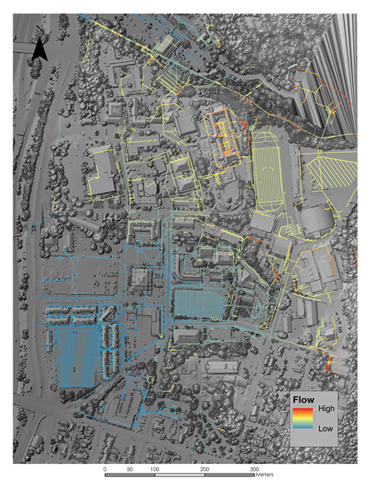

Humboldt State Surface Water Assessment
{kind=link}
LiDAR, Hydrology
Analysis of Humboldt State's surface water and extreme weather flooding problem areas. Senior capstone project.
Brady has been engaged in the arts/sciences of GIS, Cartography, and Programming since 2014. Whether he is working
on a geospatial trail network for the Bureau of Land Management, creating the back end framework for an engineering
firm's telemeter webmap, or making a topographic map of Mars' Olympus Mons, he strives to achieve high levels of
techical accuracy, usability, and aesthetic appeal.
A graduate of Humboldt State University with a degree in Environmental Science with Emphasis in Geospatial Informations
Systems, Brady currently resides in Eureka, California.
bradyjgoodwin@gmail.com
Download Resume
Analysis of Humboldt State's surface water and extreme weather flooding problem areas. Senior capstone project.
An attempt to quantify the amount of urbanization that occured over a 27 year period in Santa Cruz, Bolivia.
Download ReportA project to identify restoration priority areas of the Mad River burn complex, weighted for feasibility and ecological value. Download Report
A hypothetical project to determine the ideal location for a new bus stop in LA based on socioeconomic factors.
{kind=link}
{kind=link}
{kind=link}